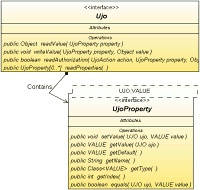

UJO Framework is an open source small Java library providing non-traditional object architecture
different from JavaBeans,
where each property has its own static object.
The original idea was a toy with generic data types of Java 5.0
however over time it appears, that the architecture has some exciting new features.
Features
More characteristics:

- very simple introspection
- serialization to / from formats XML, CSV and Resource bundle
- UJO object controls an access to its property for different actions
- JavaBeans ready
- it is easy to clone, copy, sort and compare
- direct support of the JTable
- reduction of UJO source code for an easier maintainance
- way for an implementation a listener to only one place for each properties include children
- most features are checked by unit tests
- tiny framework without further dependencies
Architecture
UJO is an abbreviation for Unified Java Object
and it is a such object
which implements an interface Ujo.
You can imagine the object UJO like a map (an object that maps keys to values)
with data access by methods of the key for example.
This key is made up of the implementation of the UjoProperty
including (among others) two type-safe methods:
- UjoProperty.setValue(Ujo, VALUE) - to write the value into the object and
- UjoProperty.getValue(Ujo) - to read the value.
- MapUjo - is suitable for simple implementation with sufficient power for common applications, it is based on the object HashMap
- ArrayUjo - the high performance is implemented by the object array
- BeanUjo - implementation calls related methods of JavaBean using a Java reflection
Sample of usage:
How do you write your first UJO object? The easiest way is to use some abstract implementation of the Ujo interface.
For example see an implementation of the class Person which includes three attributes and a one method to add a cash.
import org.ujoframework.implementation.map.*; public class Person extends MapUjoExt<Person> { public static final UjoProperty<Person,String > NAME = newProperty("Name", String.class); public static final UjoProperty<Person,Boolean> MALE = newProperty("Male", Boolean.class); public static final UjoProperty<Person,Double > CASH = newProperty("Cash", 0d); public void addCash(double cash) { double newCash = get(CASH) + cash; set(CASH, newCash); } }
Note that a result of the method get(CASH) needs no casting to Double type and the Java compiler disallows improper parameter types in the statement set(CASH, newCash). The CASH property have got a default zero value to all Person instances similar like a primitive type do it.
The sample uses an extended API for more conventional property access in a source code that's available since the UJO release 0.80. The new solution allows to you to chain more properties according to a model of a some new popular languages. The extended API is a child of the original API so you can mix both types because all internal tools are handling the original API still .
Sometimes it is not possible to extend an abstract class so you can implements the Ujo interface by four methods only. Note the implementation is valid also for all subclasses of the Person class. The sample:
import java.util.HashMap; import org.ujoframework.*; import org.ujoframework.core.UjoManager; import org.ujoframework.implementation.map.*; @SuppressWarnings("unchecked") public class Person implements Ujo { public static final UjoProperty<Person,String > NAME = new MapProperty("Name", String.class); public static final UjoProperty<Person,Boolean> MALE = new MapProperty("Male", Boolean.class); public static final UjoProperty<Person,Double > CASH = new MapProperty("Cash", 0d); // --- The start of the MapUjo implementation --- private HashMap map = new HashMap(); public Object readValue(UjoProperty property) { Object result = map.get(property); return result!=null ? result : property.getDefault(); } public void writeValue(UjoProperty property, Object value) { map.put(property, value); } public UjoProperty[] readProperties() { return UjoManager.getInstance().readProperties(getClass()); } public boolean readAuthorization(UjoAction action, UjoProperty property, Object value) { return true; } // --- The end of MapUjo implementation --- /** Add cash in the Ujo implementation */ public void addCash(double cash) { double newPrice = CASH.of(this) + cash; CASH.setValue(this, newPrice); } }
Compare the both samples with a sample code of a JavaBean object. If we exclude all imports from the code then the Ujo implementation have got slightly less code lines in compare to JavaBeans. However the more properties gives significantly the better effect in favour of the Ujo implementation.
Reference projects
jWorkSheet
is a personal time tracker for your projects.
It is a reference implementation of this UJO Framework.
Here are some characteristics:
PekiLine - the desktop application manages your personal (English) vocabulary to learn.
- persistence is made by UJO Framework include application parameters.
- all table model are a child of UjoTable class.
- very small size: 200 kB (signed) include the UJO Framework library.
- the jWorkSheet have used features of UJO release 0.7x (hard core).
PekiLine - the desktop application manages your personal (English) vocabulary to learn.
- the application can get an translation word from a Google dictionary include a pronunciation in case you are on-line
- you can modify all items of vocabulary, sort columns or mark word to a print
- personal data are stored in a XML file located in the user home subdirectory
Licence:
Source code was released under license Apache License, Version 2.0.
Copyright 2007-2009 Paul Ponec
Licensed under the Apache License, Version 2.0 (the "License");
you may not use this file except in compliance with the License.
You may obtain a copy of the License at
http://www.apache.org/licenses/LICENSE-2.0
Unless required by applicable law or agreed to in writing, software
distributed under the License is distributed on an "AS IS" BASIS,
WITHOUT WARRANTIES OR CONDITIONS OF ANY KIND, either express or implied.
See the License for the specific language governing permissions and
limitations under the License.
Similar projects:
Here are links to some other projects with similar concerns:
- Bean-properties - project using Java 5 syntax and object oriented features in order to provide property support that leapfrogs the properties available in Delphi/VB and other languages. The properties implemented in bean-properties use Java's abilities (interfaces, annotations, generics etc.) to create a more powerful, extensible and object oriented system to expose component state.
- Commom Attributes - an attribute and metadata solution for the Java 1.4 or earlier enables Java programmers to use C#/.Net-style attributes in their code
- JSR-175 - a metadata facility for the JavaTM Programming Language
- MetaClass - the attributes are usually specified in the java source files as javadoc markup. The source file is then processed and the metadata is compiled into descriptors that MetaClass is capable of reading. These descriptors are then loaded at runtime to provide metadata about the program elements.
- qDox - a high speed, small footprint parser for extracting class/interface/method definitions from source files complete with JavaDoc @tags. It is designed to be used by active code generators or documentation tools.
Contact:
- Blog: http://ujoframework.blogspot.com/
- Support: discussion forums
- Contact: ujoframework@gmail.com
- See homepage http://ponec.net/ for more applications of the author.

{kind=link}